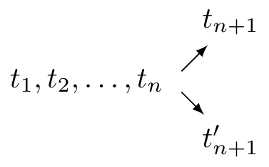
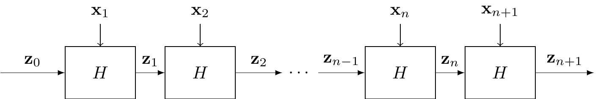
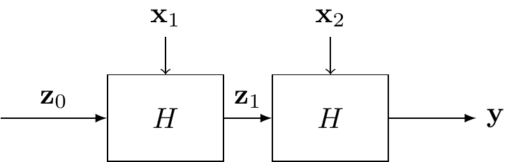
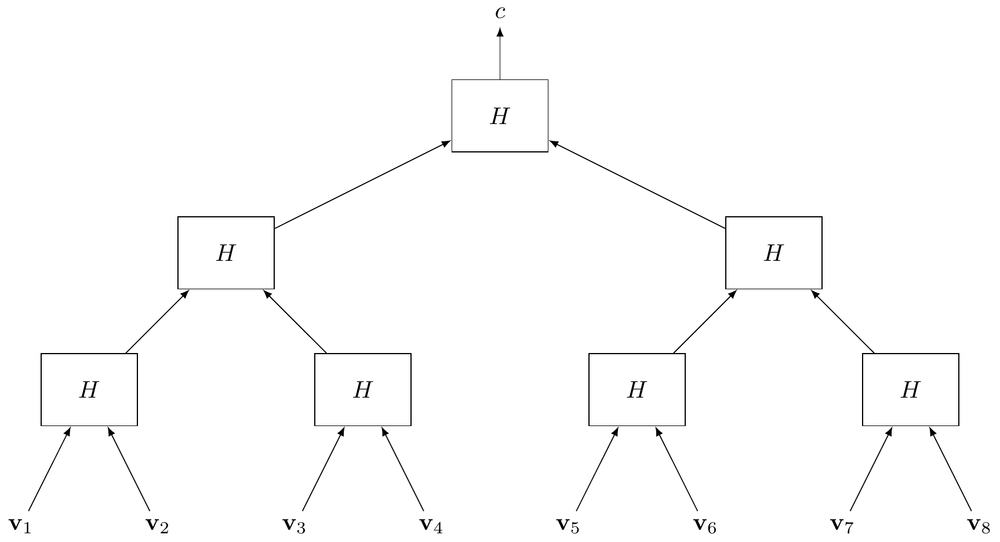
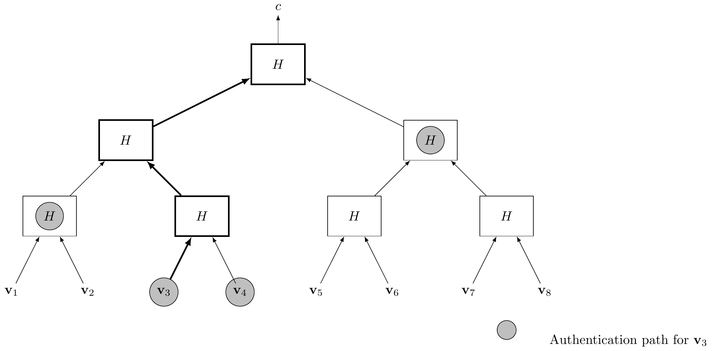

5 Hash functions
In this section, we take a detour from encryption to look at other cryptographic primitives. You might have encountered hash functions before, in a different field. However, we will see that hash functions in cryptography require some special properties. We will:
Briefly discuss some issues in cryptocurrencies, and how they can be solved with hash functions.
Define hash functions and their main properties.
Learn about the birthday paradox attack on hash functions.
Learn how to extend the domain of a hash function through the Merkle-Damgärd transformation.
5.1 Some issues in cryptocurrencies
Traditional currency is centralized, which means that there is an authority that dictates money policy, establishes ownership, and manages the whole system. On the other hand, in recent decades there has been a substantial effort in using cryptographic tools to build what we know as cryptocurrencies, which aim to be completely decentralized.
In this section, we discuss some issues that arise in decentralized systems. This is a very high level overview, based on the Bitcoin20 approach, and omits many technicalities for the sake of the exposition. Nevertheless, it will be enough to motivate the use of hash functions.
A coin, the monetary unit of a cryptocurrency, is nothing more than a unique bitstring \(ID\) that identifies is, and is accordingly called its identifier. An immediate problem arises regarding transferring ownership of a coin.
Problem 1 (Double-spending). Suppose that \(A\) buys something from \(B\) on the internet and pays with a coin \(ID\). What prevents \(A\) from using the same coin \(ID\) to buy something else from a different party \(C\)?
On very general terms, the solution is to publish every transaction that happens, so that the journey of each coin can be traced and thus its ownership can be established. In the problem above this means that, when \(A\) buys from \(B\), the message “\(A\) transfers the coin \(ID\) to \(B\)” is added to the public ledger. Then, after the ledger awards \(B\) ownership of the coin, they can send whatever \(A\) bought. Moreover, if \(A\) tries to spend the same coin again, \(C\) will notice in the ledger that the coin no longer belongs to \(A\), and the transaction will be denied. So, ignoring the logistics of checking and storing and increasingly large ledger, we would have solved the issue. But we still have to deal with the following problem.
Problem 2. Who keeps track of this public ledger? Who adds the new transactions? If there is no central authority, how do users agree on which transactions happened?
More concretely, imagine that there is a ledger of transactions \[t_1,t_2,\dots,t_n,\] and two different options \(t_{n+1},t_{n+1}'\) are claimed to be the next transaction by different parties:

This situation is called a fork. The system is designed in such a way that users are encouraged to keep a consensus on a ledger of valid transactions. The general idea is that you have more of a say if you have more computational power, or more precisely if you have spent more CPU cycles in adding transactions to the ledger. So we need a way to “prove” that you have spent these cycles.
Let \[H:\{0,1\}^k\rightarrow\{0,1\}^\ell,\] for some \(k,\ell\in\mathbb{N}\), where in general \(k\) is much larger than \(\ell\), be an efficiently computable function. Suppose that we are interested in the problem of finding \(\mathbf x\) such that \(H(\mathbf x)=\mathbf 0\), where \(\mathbf 0\) is the string of zeros of length \(\ell\). If we know nothing about \(H\), the best we can do is try random inputs until we find a good one. On average, it would require \(2^\ell\) attempts to find such \(\mathbf x\). That is, whoever shows a solution \(\mathbf x\) has “proven” that he spent \(O(2^\ell)\) evaluations of \(H\) in solving the problem. This concept is known as a proof of work.
But back to transactions and the ledger: assume that the transaction \(t_{n+1}\), involving coin \(ID\), is to be added to the ledger. Then, our proof of work consists of producing \(\mathbf x\) such that the first \(T\) bits of \(H(ID|\mathbf x)\) are \(0\), for some \(T\). Once you have the solution, you can add the transaction, including \(ID\) and \(\mathbf x\), to the ledger. Note that solving the problem takes time \(O(2^T)\), whereas checking a solution is efficient, as it amounts to evaluating the function \(H\) just once with the transaction as input.
But isn’t this a lot of trouble to get someone’s transaction up in the ledger? The solution here is extremely simple: motivate the users of the network by awarding them newly mint coins when they successfully add a new transaction to the ledger. These users are the so-called miners, and the act of mining a cryptocurrency is just finding the right preimages of the function \(H\).
Thus, each addition to the ledger has two outcomes: transferring ownership of existing money and minting new money. And here’s the catch: as a miner, your new money is just valid a hundred transactions after your contribution to the ledger. Give a fork, honest users are encouraged to look at the longest ledger and ignore the rest. This encourages miners to work on the single longest ledger too, because the alternatives will be rejected by the users and thus the transactions in them virtually never happened. Therefore, miners might spend CPU cycles for nothing if they decide to work on shorter ledgers of a fork.
Another issue is that we want each new transaction to be “bound” to the previous ones. If the new transaction did not depend on the previous, nothing would prevent a malicious user from double-spending. This is also achieved through the function \(H\). Given previous transactions \(t_1,\dots,t_n\), the new transaction \(t_{n+1}\) will include its own transaction identifier \(H(t_1,\dots,t_n)\) besides \(ID\) and \(\mathbf x\). However, the ledger gets larger and larger, and we want the identifier to be small to keep things efficient. So \(H\) is mapping a very large set into a smaller one. The upshot is that there is no way for transaction identifiers to be unique.
Problem 3. What if there are two sets of transactions \(t_1,\dots,t_n\) and \(t_1',\dots,t_n'\) with the same identifier \(H(t_1,\dots,t_n)=H(t_1',\dots,t_n')\)?
Fortunately, although it is clear that there is no possible function \(H\) such that the outputs are unique, it will be enough if it is hard to find a pair of inputs with the same output, so that this issue with the identifiers cannot be exploited in practice.
5.2 Hash functions
The central piece of this whole apparatus seems to be the function \(H\), which we have not looked into yet. Clearly we will require some unconventional properties from this function. Let us summarize what we discussed about it:
The input is larger than the output, possibly by much.
Given \(\mathbf y\), it should be hard to find \(\mathbf x\) such that \(H(\mathbf x)=\mathbf y\).
It is hard to find \(\mathbf x,\mathbf x'\) such that \(\mathbf x\neq \mathbf x'\) and \(H(\mathbf x)=H(\mathbf x')\).
With this intuition in mind, let us introduce the solution to all of our problems: hash functions. At their core, hash functions are nothing more than functions that take an arbitrarily-long bitstring and output a bitstring of fixed length.
Definition 5.1 A hash function is an efficiently computable21 function \[H:\{0,1\}^*\rightarrow\{0,1\}^\ell,\] for some \(\ell\in\mathbb{N}\), and where \(\{0,1\}^*\) denotes the set of all bitstrings of any length. The process of computing a hash function is often called hashing, and the output is referred to as the hash.
Note that, unlike encryption, hash functions do not use any secret key. From a functionality point of view, this is all we need: a function that compresses bitstrings and is efficient enough to compute. However, to ensure the security of the cryptocurrency model described above, we will need an extra property.
We observe that hash functions must be public and deterministic, because different parties need to be able to arrive to the same result to verify a transaction.
The hash function is taking arbitrarily-large messages and producing fixed-length ones. That it, it is mapping a larger set into a smaller set. Therefore, there must be different strings that produce the same hash. Given a bitstring \(\mathbf b\), there might exist \(\mathbf b'\neq\mathbf b\) such that \[H(\mathbf b)=H(\mathbf b').\]
Nevertheless, we want this pair of bitstrings to be hard to find. This, and the observations at the beginning of Section 4.2, motivate the following set of definitions.
Definition 5.2 Let \(H\) be a hash function. We say that \(H\) is:
collision-resistant if it is hard to find two bitstrings \(\mathbf b, \mathbf b'\) such that \(\mathbf b\neq \mathbf b'\) and \(H(\mathbf b)= H(\mathbf b')\). In this case, the pair \((\mathbf b, \mathbf b')\) is called a collision of \(H\).
second preimage-resistant if, given \(\mathbf b\), it is hard to find \(\mathbf b'\neq \mathbf b\) such that they form a collision.
preimage-resistant if, given \(h\) sampled uniformly at random, it is hard to find a bitstring \(\mathbf b\) such that \(H(\mathbf b)=h\).
These properties are related by the following result.
Proposition 5.1 Let \(H\) be a hash function \[H:\{0,1\}^*\rightarrow\{0,1\}^\ell.\] If \(H\) is collision-resistant, then it is second preimage-resistant.
Exercise 5.1 Try to prove the proposition above by proving the contrapositive: assume that you can break second preimage resistance, and show how to use that to break collision resistance.
Informally, second-preimage resistance implies preimage resistance for any hash function that performs some “meaningful” compression of the input. This means that, for any hash function used in practice, if it is second-preimage resistant then it its preimage resistant, although the statement cannot be formally proven, due to some pathological counterexamples.
5.3 Birthday attacks
Assume that we are an adversary trying to attack a hash function \[H:\{0,1\}^*\rightarrow \{0,1\}^\ell,\] that is, we are trying to find a collision. The straightforward approach is the following: we choose random strings and compute their hashes, until two strings return the same hash. In the worst case, this requires \(2^\ell+1\) tries, since there are at most \(2^\ell\) different outputs. Therefore, it looks like the brute-force attack takes time \(O(2^\ell)\) to succeed. This would suggest that a hash function with output length \(\ell\) gives us a security level of \(\ell\).
In this section, we look into a generic attack that works for any hash function, which is based on the well-known birthday paradox from probability theory, and greatly improves over the above estimation. Consider the following problem.
Problem 4. There is a room with \(40\) independent students. How likely is that any two of them share the same birthday?
On first sight, one might think that this probability is quite low. After all, there are \(356\) days in the year, and only \(40\) students. Let us compute the actual probability, by solving a related problem: what is the probability of none of the \(40\) students sharing their birthday?
We start by numbering the students from \(1\) to \(40\), according to any criterion. To be able to reason more formally about the problem, we introduce the function \[\mathsf{bd}:\{1,\dots,40\}\rightarrow\{1,\dots,365\},\] which associates to each student its birthday. Then, the probability of student \(\#2\) not sharing a birthday with student \(\#1\) is \[\Pr[\mathsf{bd}(1),\mathsf{bd}(2)\text{ are different}]=\frac{364}{365},\] since there are \(364\) days of the year that are not the birthday of student \(\#1\). Let’s introduce student \(\#3\) into the picture, and let us consider the events:
\(\mathsf{A}\): \(\mathsf{bd}(3)\) is different from \(\mathsf{bd}(1)\) and \(\mathsf{bd}(2)\).
\(\mathsf{B}: \mathsf{bd}(1),\mathsf{bd}(2)\) are different.
Clearly, the intersection event is
- \(\mathsf{A}\cap\mathsf{B}: \mathsf{bd}(1),\mathsf{bd}(2),\mathsf{bd}(3)\) are pairwise different.
Then, using conditional probabilities, we have that \[\Pr[\mathsf{A}\cap\mathsf{B}]=\Pr[\mathsf{B}]\cdot\Pr[\mathsf{A}|\mathsf{B}]\] We already know \(\Pr[\mathsf{B}]\), so we are just missing the second term. If the birthdays of students \(\#1\) and \(\#2\) are different, then the probability of \(\#3\) having a different birthday from them is \[\Pr[\mathsf{A}|\mathsf{B}]=\frac{363}{365},\] since there are \(363\) days that are neither the birthday of \(\#1\) or \(\#2\). Thus, the probability of the three students having different birthdays is \[\Pr[\mathsf{A}\cap\mathsf{B}]=\frac{364}{365}\cdot\frac{363}{365}.\] By iterating this process for each student, we arrive at the conclusion that the probabilities of all \(40\) students having different birthdays is \[\frac{364}{365}\cdot\frac{363}{365}\cdot \dots \cdot\frac{326}{365} \approx 0.108768.\] In conclusion, the probability of two students sharing a birthday is approximately \[1-0.108768= 0.891232.\] This is actually a pretty high probability. This discrepancy between what one might naively expect and what actually happens is known as the birthday paradox. Below, you can find the solutions to Problem 4 for different numbers of students (rounded to six decimal positions).
| Students | Probability |
|---|---|
| \(10\) | \(0.116948\) |
| \(20\) | \(0.411438\) |
| \(40\) | \(0.891232\) |
| \(80\) | \(0.999914\) |
| \(128\) | \(0.999999\) |
So what does any of this have to do with breaking a hash function? What we have just done is computing the probability of finding two students such that the birthday function returns the same value on them. That is, we have found a collision of the birthday function! In doing so, we have assumed that the output of the birthday function behaves as the uniform distribution on \(\{1,\dots,365\}\). But, isn’t that exactly the effect that we want from a good hash function? That outputs look random and unrelated? So the moral of the story is that finding collisions in a hash function is actually much more likely that expected. More precisely, it can be proven with some careful probabilities analysis that, for any hash function \(H\) which outputs bitstrings of length \(\ell\), there is a decent probability of finding a collision after \(\sqrt{2^\ell}\) evaluations.
Compare this with our initial estimation. At the beginning of the section, we bounded a brute force attack by \(O(2^\ell)\). However, we now see that an attacker has a good probability of finding a collision in time \(O(2^{\frac{\ell}2})\). Thus, we conclude that a hash function with output length \(\ell\) gives us \(\ell/2\) bits of security. Or the other way around, if we want \(\ell\) bits of security, we need our hash function to have output length \(2\ell\).
5.4 The Merkle-Damgård transformation
As was the case for encryption, we often build hash functions in two steps. First, we build a hash function for fixed-length inputs, e.g. \[H:\{0,1\}^{2\ell}\rightarrow\{0,1\}^\ell,\] and then we extend them to arbitrarily-large input. We will not get into the details of concrete constructions, but will simply mention the SHA family of hash functions, which is the standard used in practice most of the time.22
A common way to realize this second step is to use the Merkle-Damgård transformation,23 which describes how to build from \(H\) another hash function \(\mathbf{H}\) that takes as input any string of length at most \(2^\ell-1\), and outputs a hash of length \(\ell\). It is clear that repeated applications of the transformation can make the input go as large as we want.
Similar to modes of operations in block ciphers, the Merkle-Damgård transformation starts by splitting the string \(\mathbf x\) of length \(L\leq 2^\ell\) to be hashed into blocks \[\mathbf x_1, \dots, \mathbf x_n,\] each of them of length \(\ell\).24 An additional block \(\mathbf x_{n+1}\) is added, containing a binary encoding of \(L\). Note that, because \(L\leq 2^n-1\), we can fit the encoding of \(L\) in \(n\) bits. Then, we recursively compute \[\mathbf z_i=H(\mathbf z_{i-1}|\mathbf x_i),\] for \(i=1,\dots,n+1\), and where \((\mathbf z_{i-1}|\mathbf x_i)\) means the concatenation of the bitstrings \(\mathbf z_{i-1}\) and \(\mathbf x_i\). Then, the hash of \(\mathbf x\) is \[\mathbf{H}(\mathbf x)=\mathbf z_{n+1}.\] As in modes of operation, there is no “previous block” in the first iteration, and so again we introduce an initialization vector \(\mathbf z_0\), which can be set to the string of \(0\)’s of length \(n\), or any other bitstring. There is no need for the IV to be secret.

Proposition 5.2 If \(H\) is a collision-resistant hash function, then \(\mathbf{H}\), produced with the Merkle-Damgård transformation, as described above, is also collision-resistant.
Solved exercises
Exercise 5.2 Consider function \(f: S\times S \rightarrow S\) that is symmetric, that is, for all \(a,b\in S\): \(f(a, b) = f(b, a)\). Can this be a collision-resistant hash function from \(S\times S\) to \(S\)?
Solution. No, because we the symmetric property implies collisions. Indeed, take any \(a, b\in S\) with \(a\neq b\) and let \(c = f(a,b)\). Now, \(f(a,b) = c = f(b,a)\). Note that \((a,b)\neq (b,a)\) since \(a\neq b\), but \(H(a,b)=H(b,a)=c\). Therefore, we have a collision.
Exercise 5.3 Consider the following hash function \(f_{42}: \mathbb{Z} \rightarrow \{0,\ldots, 41\}\) that maps \(n \mapsto n \mod 42\) where \(a \mod b\) denotes the remainder of the division \(a/b\).
- Is \(f_{42}\) a hash function?
- Is it collision resistance?
Solution.
A hash function must be (1) efficiently computable and (2) shrinking. Since integer division is efficiently computable and it maps integers numbers to a fixed-size set it is indeed a hash function.
It is not collision resistance. Take any pair \(n, n+42\). We claim that these values will have the same hash. Let \(f_{42}(n) = n\mod 42 = r\). This means that \(n = q\cdot 42 + r\) for some \(r<42\). We can also write
\[ n+42 = q\cdot 42 + r+42 = (q+1)\cdot 42 + r, \quad r<42 \] which means that \(f_{42}(n+42) = (n+42)\mod 42 = r\) and therefore \((n, n+42, r)\) is a collision for every \(n\in\mathbb{Z}\).
Exercise 5.4 Consider a simplified version of the Merkle-Damgård transform, where only two inputs are compressed (instead of arbitrary). Prove that if the underlying hash function \(H:\{0,1\}^{2\ell} \rightarrow \{0,1\}^{\ell}\) is collision resistance, then the transformed function \(\mathbf H:\{0,1\}^{4\ell} \rightarrow \{0,1\}^{\ell}\) is collision resistant as well.
Solution. We know that \(H\) is collision-resistant. We need to show that the transformed function \(\mathbf{H}\) is also collision-resistant. Our strategy is the following: we will assume that \(\mathbf{H}\) is not collision-resistant and use this fact to find a collision for \(H\). If we manage to do this, we end up in a contradiction: while \(H\) is collision resistant we found a collision! It must be the case that our assumption “\(\mathbf{H}\) is not collision-resistant” is false and therefore the proposition holds.
We first present a diagram for the simplified transformation:

We assume \(\mathbf{H}\) is not collision-resistant. Therefore, there exists an efficient algorithm \(\mathcal{A}\) that outputs a collision.
We will use this algorithm to construct a collision for \(H\). Running \(\mathcal{A}\) will output a collision, that is, it will output \((\mathbf z_0, \mathbf x_1, \mathbf x_2)\neq (\mathbf z_0', \mathbf x_1', \mathbf x_2')\) such that \[ \mathbf{H}(\mathbf x_1, \mathbf x_2; \mathbf z_0) = \mathbf y = \mathbf{H}(\mathbf x'_1, \mathbf x'_2; \mathbf z_0') \] Note that the algorithm should also give the randomness used, here the initial IV. Also note that either \(\mathbf x_1\neq \mathbf x_1'\) or \(\mathbf x_2\neq \mathbf x_2'\).
We will now consider the middle values \(\mathbf z_1, \mathbf z_1'\). We will consider two cases:
Case \(\mathbf z_1=\mathbf z_1'\): This means that \(H(\mathbf z_0, \mathbf x_1) = H(\mathbf z_0', \mathbf x_1')\). Now, it should be the case that \(\mathbf z_0=\mathbf z_0'\) and \(\mathbf x_1=\mathbf x_1'\). Indeed, if any of pair is different, then \((\mathbf{z}_0,\mathbf{x}_1)\neq(\mathbf{z}_0',\mathbf{x}_1'), \mathbf z_1\) is a collision for \(H\)! Therefore, it should be the case that \(\mathbf z_0 = \mathbf z_0'\), \(\mathbf x_1 = \mathbf x_1'\) and since the original output of \(\mathcal{A}\) is a collision \(\mathbf{x}_2 \neq \mathbf x_2'\). But then we have that \[ H(\mathbf z_1, \mathbf x_2) = \mathbf y = H(\mathbf z_1', \mathbf x_2') \] for a \(\mathbf x_2\neq \mathbf x_2'\). Therefore, \((\mathbf z_1, \mathbf x_2)\neq (\mathbf z_1', \mathbf x_2'), \mathbf y\) is a collision for \(H\).
Case \(\mathbf z_1\neq\mathbf z_1'\): In this case, we have \[ H(\mathbf z_1, \mathbf x_2) = \mathbf y = H(\mathbf z_1', \mathbf x_2') \] for a \(\mathbf z_1\neq \mathbf z_1'\) (regardless of the values of \(\mathbf{x}_2,\mathbf{x}_2'\)). Therefore, \((\mathbf z_1, \mathbf x_2)\neq (\mathbf z_1', \mathbf x_2'), \mathbf y\) is a collision for \(H\).
Exercise 5.5 (*)
In this exercise we will demonstrate how to use Hash functions to build a cryptographic primitive that is called Vector Commitment Scheme25. A VC scheme allows Alice to commit to a vector of elements \(\mathbf v = (\mathbf v_1, \ldots, \mathbf v_n)\in S^n\). Let \(c\) be the commitment to the vector. Bob, having only the commitment, wants to learn the \(i\)-th element of the committed vector. Alice responds with \(\mathbf v_i\) and she also gives a proof \(\pi_i\) that the \(i\)-th element is indeed \(\mathbf v_i\). Bob can now verify the proof and convince itself this is indeed the \(i\)-th value. We need two properties:
- Efficiency: the commitment should be small, specifically it should be independent of the vector dimension \(n\).
- Binding: After committing to \(c\), Alice cannot give two valid proofs that the \(i\)-th element is both \(\mathbf v_i\neq \mathbf v_i'\).
You can think of a VC scheme as a short digest of a big database, whose elements can be efficiently and verifiably queried.
Let \(H: \{0,1\}^{2\ell} \rightarrow\{0,1\}^{\ell}\) be a collision resistant hash function. Build a vector commitment scheme with \(S=\{0,1\}^{\ell}\) using the Merkle-Damgård transformation.
What is the bottleneck for efficiency in the above construction?
Describe an alternative way of building a VC scheme using \(H\). Hint: consider using binary trees.
Argue informally that the above construction satisfies the vector commitment properties described above.
Solution.
Let \(n\) be the dimension of the committed vectors. We need to describe how to commit to \(c\), how the proof looks like and how to verify the proof.
- To commit to a vector \(\mathbf v\in(\{0,1\}^{\ell})^n\) we simply apply the Merkle-Damgård transformation, that is, we compute the commitment as \(c=\mathbf{H}(\mathbf v)\).
- The proof for the \(i\)-th element consists of the value \(\mathbf{z}_0\) and all but the \(i\)-th element of \(\mathbf v\), that is, \[ \pi_i = (\mathbf{z}_0, \mathbf{v}_1,\ldots,\mathbf{v}_{i-1},\mathbf{v}_{i-1},\ldots, \mathbf{v}_n) \]
- To verify the proof, Bob recomputes the hash with the given values and \(\mathbf v_i\), that is, it computes \(c' = \mathbf{H}(\mathbf{v}_1,\ldots,\mathbf{v}_n;\mathbf{z}_0)\) and accepts iff \(c = c'\).
Let’s now argue that this satisfies the given properties. First, efficiency is satisfied since \(c\in\{0,1\}^\ell\) which is indeed independent of \(n\). As for the binding property, assume Alice can convince that a commitment \(c\) open’s at position \(i\) in two different values \(\mathbf v_i\neq \mathbf v_i'\). This means that she must also create two valid profs \[ \pi_i = (\mathbf{z}_0, \mathbf{v}_1,\ldots,\mathbf{v}_{i-1},\mathbf{v}_{i-1},\ldots, \mathbf{v}_n) \] \[ \pi_i' = (\mathbf{z}_0', \mathbf{v}_1',\ldots,\mathbf{v}_{i-1}',\mathbf{v}_{i-1}',\ldots, \mathbf{v}_n') \] Since both proofs are valid, it must be the case that \[ \mathbf{H}(\mathbf v;\mathbf{z}_0) = c = \mathbf{H}(\mathbf v';\mathbf{z}_0') \] But \(\mathbf v\neq \mathbf v'\) are different at least in one position, namely position \(i\), so \((\mathbf{z}_0, \mathbf v) \neq (\mathbf{z}_0', \mathbf v'), c\) is a collision for \(\mathbf H\)! Since the transformation is collision-resistant, this is a contradiction and our VC scheme should be indeed binding.
The bottleneck is clearly the size of the proof and the verification time. Indeed, the proof is essentially the whole committed vector and verification consists of recomputing the commitment! Now imagine you have a commitment to a database of multiple GB. This could clearly be a problem. As an efficiency requirement, we should add that the proof size is also small. How small? We want it at least to be sublinear in \(n\). This would guarantee that we don’t receive something that is roughly as big as the vector itself. We would also want the verification of the proof to happen in time sublinear in \(n\). It is a natural property that the verifier is efficient (think of Alice a big cloud company and Bob being a user only holding an old smartphone).
The first observation is that if we need to verify \(\mathbf v_i\), we don’t need to know \(\mathbf z_0, \mathbf v_1, \ldots, \mathbf v_{i-1}\). We could start from \(\mathbf z_{i-1}\) and recompute the hash from this point. However, this does not meet our criteria. The proof is still linear in \(n\) in the worst case (consider for example \(i=1\))! We need something better.
Consider the following approach: Instead of computing a big hash \(c = \mathbf H(\mathbf v_1, \ldots, \mathbf v_n)\), we compute two smaller hashes \(c_L = \mathbf H(\mathbf v_1,\ldots, \mathbf v_{n/2})\) and \(c_R = \mathbf H(\mathbf v_{n/2+1},\ldots, \mathbf v_{n})\). We can now apply the inner function \(H\) to compute the commitment \(c=H(c_L, c_R)\). A proof now would be half the size. Indeed, if \(i\) is on the first half, we don’t need to send all the elements of the right part but only \(c_R\). And similarly if it is on the right! We halved the proof size in half already! And we can use recursion to make it even better, that is, apply the same strategy on the two halfs themselves and so on. This gives a tree-like structure.
Assume w.l.o.g. that \(n\) is a power of 2. The prover creates a binary tree as follows:
- Put the values \(\mathbf v_1, \ldots, \mathbf v_n\) to the leafs.
- The value of each inner node is \(n = H(n_L, n_R)\) where \(n_L, n_R\) are the left and right children of each node.
The commitment is the root of the tree. This construction is called a Merkle tree and is a widely used vector commitment scheme. We next present the construction schematically. Note that indeed in each level the inputs of \(H\) are elements of \(\{0,1\}^{2\ell}\).

We next describe the commitment scheme.
- To commit to a vector \(\mathbf v\), build a Merkle tree as described above.
- The proof for the \(i\)-th element is the neighbouring nodes of the path from the root to the \(i\)-th leaf.
- To verify the proof, recompute the path from scratch until the root value \(c'\) and verify that the latter value is equal to the commitment \(c\).
As an example, we show schematically what values you need to open \(\mathbf v_3\).

First, let’s see efficiency. The commitment is here as well independent of \(n\) since it is a single digest. How about the proof size? This is basically a number of hashes equal to the height of the binary tree. The height is \(\log n\), so the proof size is \(\mathcal{O}(\ell\cdot\log n)\) bits, which is sublinear in \(n\). Similarly, the verifier needs to perform a single hash computation for each level, so it does \(\mathcal{O}(\log n)\) hash computations, which is also sublinear in \(n\).
How about binding? Let’s assume you have two accepting openings for \(\mathbf v_i\neq \mathbf v_i'\). Consider the first hash application. Denote \(\mathbf x, \mathbf x'\) the neighboring nodes at the leaf level. Recall that these are given as part of the proof. You should have \[ c = H(\mathbf v_i, \mathbf x), \qquad c' = H(\mathbf v'_i, \mathbf x') \] Now you have two cases:
- if \(c=c'\) then you have a collision! Indeed, regardless of what the values \(\mathbf x, \mathbf x'\) are, you know that \(\mathbf v_i\neq \mathbf v_i'\) but you have the same hash.
- If they are different compute the hash on the next level for both.
You can continue on this way until at some level you get the same hash. This will definitely happen! Since both proofs are verifying, the root node is for both \(c\) so this is the case in the end. So there must be at least one step where the hash becomes the same along the way. The first time this happens you get a collision! Indeed, you (1) end up with the same hash and (2) you know that the inputs are different. Indeed the hash computation at this level will be of the form
\[ c_N = H(c_L, \mathbf x) = H(c_L', \mathbf x') \] where \(c_L, c_L'\) are the hashes from the previous level (note that here we assume w.l.o.g. that they are left children). Since this is the first time the hashes are equal, it means that \(c_L\neq c_R\) which gives the collision.
You might wonder what “efficiently computable” means in this case, if the input size could be anything. To be precise, we say that the function is efficiently computable if it can be evaluated in time polynomial in \(\ell\) when the input is of length polynomial in \(\ell\).↩︎
You might also see the same concept named the Merkle-Damgård transform, or the Merkle-Damgård construction.↩︎
As before, use some padding if the length of \(\mathbf x\) is not a multiple of \(\ell\).↩︎
We deal with a simplified and informal version of vector commitment schemes in this exercise. The actual definitions of such a scheme can vary and can have additional properties.↩︎